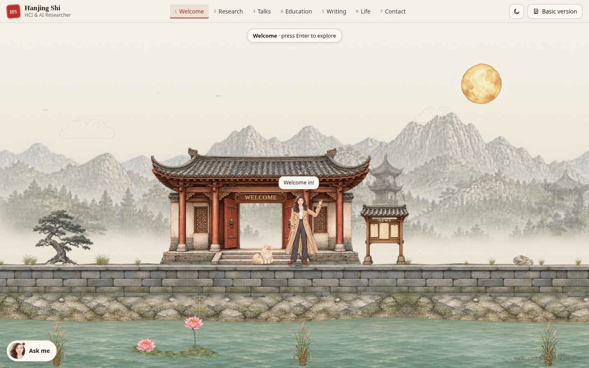
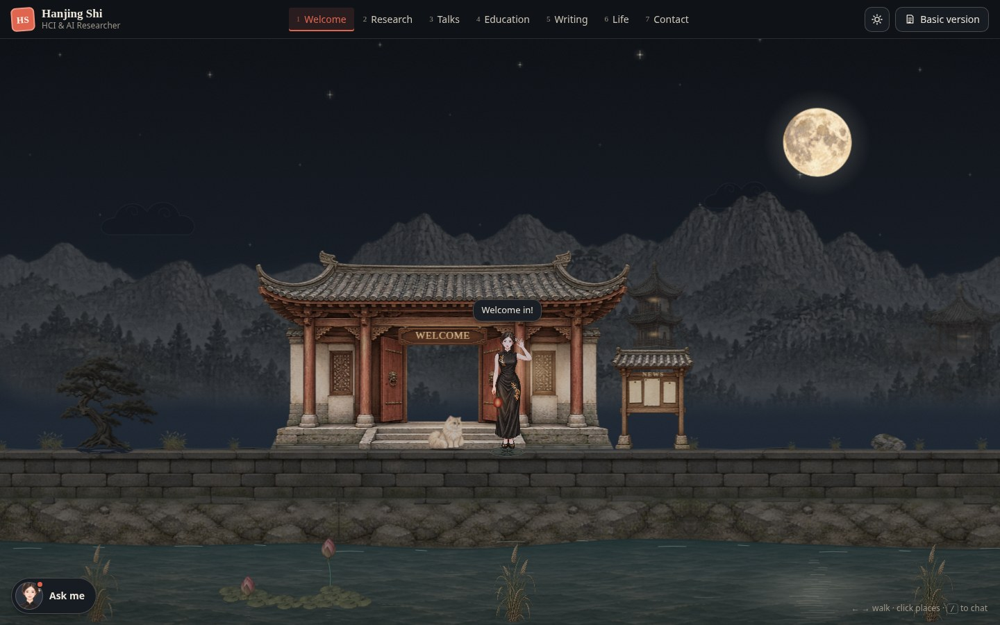

A closer look.
Enter the interactive world →Seven places, by day and night. These scene pictures were captured during this update; the motion recordings and greeting pictures below show the animation follow-ups. Open a picture to see the full image, or visit the world to explore its conversations and small surprises.
Writing in motion
Night motion
Standing and greeting



